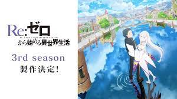

Re:ゼロから始める異世界生活

リゼロ公式
コンビニからの帰り道、突如として異世界へと召喚されてしまった少年、 菜月昴。目の前に広がるファンタジーな異世界に目を輝かせるスバルだ ったが、自分を召喚したであろう美少女の姿はどこにも見当たらない。 やがて右も左もわからない状況にスバルは頭をかかえてしまう。さらに 強制イベントと言わんばかりにチンピラに絡まれ、異世界に招かれた人間 が超常の力を発揮するといったお約束の展開もなく、容赦なく叩きのめ されるスバル。そんなスバルの前に一人の少女が現れ……。
呪術廻戦

呪い。 辛酸・後悔・恥辱...。人間の負の感情から生まれる 禍々しきその力は、人を死へと導く。 ある強力な「呪物」の封印が解かれたことで、 高校生の虎杖は、呪いを廻る戦いの世界へと入っていく...！ 異才が拓く、ダークファンタジーの新境地！
ONE PIECE

〝ひとつなぎの大秘宝〟を巡る海洋冒険ロマン!! 時は大海賊時代。いまや伝説の海賊王G・ロジャーの遺した『ひとつなぎの大秘宝』を巡って、幾人 もの海賊達が戦っていた。そんな海賊に憧れる少年ルフィは、海賊王目指して大いなる旅に出る!!